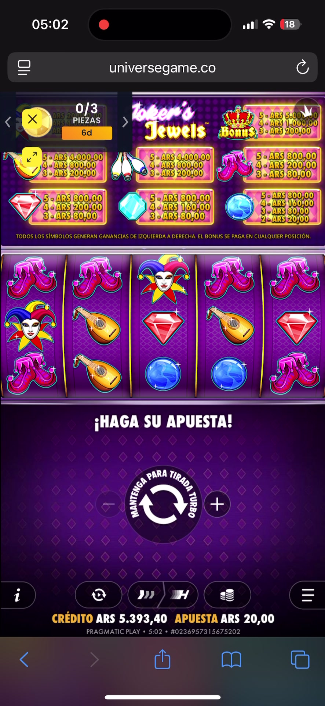

EXPLORAR · OBSERVAR · CONVERSAR
Detrás de una pantalla,
hay reglas que entender.
Una colección de ejemplos interactivos para descubrir cómo funcionan el azar, el diseño y los estímulos de los juegos.
Demostraciones educativas con fichas ficticias. Sin dinero ni premios reales.
Elegí un ejemplo
01 disponible
AZAR Y PROBABILIDADESJoker’s Jewels
Recreación visual de la grabación para el aula, con fichas ficticias y un motor didáctico independiente.
Explorar ejemploEl laboratorio sigue creciendo
Acá aparecerán los próximos ejemplos que preparemos para la clase.
PRÓXIMAMENTENo se trata solo de jugar.
Observá las reglas, compará el resultado neto y abrí la explicación de cada ejemplo. Una interfaz llamativa no cambia las probabilidades.